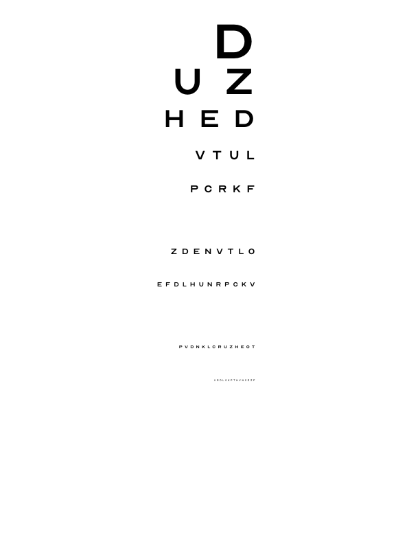

+10.1pp
BSTRB video, Hawkeye 4B vs. base
BoW F1 0.627 → 0.728; Hawkeye 8B +6.9 pp. Photos: +6.0 and +5.3 pp.
BSTRB benchmark · Hawkeye 4B & 8B
Smartphone recordings of household objects. At 2 Hz, the region in the green box is cropped and transcribed by base Qwen3-VL-4B and -8B, Hawkeye 4B and 8B, GPT-6 Astra and Claude Opus 5.5. Each panel shows the most recent transcription and its latency, together with the cumulative edit-tolerant bag-of-words F1 over all crops read so far in the clip. Correct words are shown in white and incorrect words in red. All sampled crops are shown; none were selected.
While modern Vision-Language Models (VLMs) have been remarkably successful in general scene text recognition, they consistently struggle with the long-tail distribution of text that is degraded by motion blur or low resolution. These limitations are particularly apparent in egocentric applications like smart glasses, where text is often captured in noisy environments. In this paper, we introduce the BSTRB (Blurry Scene Text Recognition Benchmark), a novel benchmark of 9,936 noisy image samples with high-fidelity ground-truth annotations derived from 1,699 real-world video sequences. To support this, we present Hawkeye4B, a VLM fine-tuned on BSTRB to read and reason about illegible text by leveraging deep contextual priors and pixel-level visual alignment. Our results show that Hawkeye4B matches or exceeds text transcription performance on much larger closed-weight VLMs, making it practical for real-time deployment. We characterize the text resolution at which current VLMs begin to fail.
Held-out results from the paper. Differences are paired against each model’s own Qwen3-VL base, with clustered bootstrap confidence intervals and Holm correction.
Smartphone recordings of everyday objects, each captured while the camera moves away, so that one transcription is paired with text that shrinks from roughly 20 px to below 5 px.

| Split | Video frames | Videos | Photos | Labels |
|---|---|---|---|---|
| train | 6,704 | 1,128 | 695 | automatic (GPT-5) |
| validation | 333 | 56 | 36 | human-verified |
| test | 1,325 | 223 | 241 | human-verified |

Automatic training labels for photographs are frequently incomplete; Hawkeye is therefore trained on video frames only.


The improvement over the base model is largest for text below 20 px; on video frames, Hawkeye 8B attains the highest BoW F1 of the evaluated models.
| Benchmark (held-out) | Hawkeye 4B − Qwen3-VL-4B | Hawkeye 8B − Qwen3-VL-8B |
|---|---|---|
| BSTRB video, BoW F1 | +10.1 pp (.627 → .728) | +6.9 pp (.675 → .744) |
| BSTRB photos, BoW F1 (241) | +6.0 pp | +5.3 pp |
| 10 general OCR sets, BoW F1 | 4 better, 6 n.s., 0 worse | 2 better, 8 n.s., 0 worse |
| Smart-glasses captures (37 objects) | BoW F1 +14.7, aligned F1 +16.6 pp; word inclusion n.s. | word inclusion +13.0, BoW F1 +11.5, aligned F1 +12.3 pp |
| Snellen charts, text ≤7 px (50 charts) | +7.2 pp | +7.5 pp |
| Repetition loops, BSTRB video ≤20 px | 14.3% → 7.2% | 8.5% → 5.2% |
Highlighted cells are significant. pp: percentage points.
BoW F1 of all 24 models on held-out BSTRB and ten general OCR benchmarks. Select a column header to sort the models by that benchmark.
Values are BoW F1 on each benchmark’s evaluation set (n images); outlined cells mark the best model per benchmark. Hover a cell for the exact value.
Difference between each Hawkeye model and its own Qwen3-VL base on every benchmark, with 95% confidence intervals. Filled markers are significant after Holm correction; open markers are not.
91 images of 37 objects captured with Meta Ray-Ban smart glasses, outside the BSTRB distribution. Scores are paired over images against the same base model.
Degenerate outputs are empty or repetitive responses, removed for both models. Differences are paired bootstrap estimates with Holm correction.
EasyOCR and Tesseract fall far behind the vision-language models on degraded frames. Google Vision runs only on the sharp reference frames, where it is competitive.
Top: BoW F1 by mean text height on held-out BSTRB video frames. Bottom: BoW F1 on the sharp reference frames, with 95% bootstrap confidence intervals.
On clean, synthetic Snellen-style charts, models diverge at 7 px and below: Hawkeye improves over its base by 7.2 pp (4B, 95% CI 4.5–9.9) and 7.5 pp (8B, 4.7–10.2) on these rows.

A Snellen chart is the eye-test chart used in optometry: rows of capital letters whose size decreases from top to bottom, read until the letters can no longer be made out. Here each chart is rendered as an image with known letter heights, from 48 px down to 4 px, so that reading accuracy can be measured separately for each height on clean text, free of blur, lighting or perspective.
| Row | Height | Letters |
|---|
| Rows | 4BΔ pp [95% CI] | 8BΔ pp [95% CI] |
|---|---|---|
| Loading. | ||
Character accuracy per row on 50 charts, by optotype height; Hawkeye minus base, paired and clustered by chart, Holm-corrected. Hover or focus a height for exact values.
| Model |
|---|
Letters are compared position by position with the reference; incorrect or extra letters are shown in red and missing letters as a red dot.
On one local GPU, Hawkeye reads a crop in under a second (median), comparable to Qwen3-VL-235B served through an API and 10–13 times faster than the reasoning API models.
| Model | AccuracyBSTRB video BoW F1 | VRAMpeak, GB | Price per 1M tokensUSD, input / output | First tokenseconds | Decode speedtokens per second | Latencyseconds per crop | CostUSD per 1,000 crops | Cost per dayUSD, continuous use |
|---|---|---|---|---|---|---|---|---|
| Measurements are being added. | ||||||||
* Local models: GPU rental price divided by measured throughput at batch size 1 (batching lowers per-token and per-crop cost). API models: list prices.
The same 70 crops, scored against reference transcriptions of the eight recorded objects with order-independent metrics averaged over crops.
| Model | BoW F1 | Word inclusion | Edit-tolerant BoW F1 |
|---|---|---|---|
| Hawkeye 4B local | 0.273 | 0.231 | 0.282 |
| Hawkeye 8B local | 0.253 | 0.241 | 0.267 |
| GPT-6 Astra API | 0.215 | 0.205 | 0.223 |
| Kimi K2.6 API | 0.190 | 0.175 | 0.222 |
| Qwen3-VL-235B API | 0.186 | 0.162 | 0.213 |
| Claude Opus 5.5 API | 0.159 | 0.125 | 0.212 |
| Qwen3-VL-8B (base) local | 0.190 | 0.187 | 0.197 |
| GPT-5 API | 0.157 | 0.124 | 0.187 |
| Qwen3-VL-4B (base) local | 0.176 | 0.173 | 0.184 |
The base model attends mainly to the largest print, whereas Hawkeye also attends to smaller text, which it then transcribes.
Loading the attention viewer.

Attention to image patches is taken from the last four layers and averaged over heads; content-free attention-sink patches are excluded. Across all analysed frames, the attention peak of both models falls on the word being generated far more often than chance, and Hawkeye does not cover a larger share of the text regions on average. The difference lies in how much of the text it goes on to transcribe. The examples shown are illustrative.

An open model, fine-tuned on degraded video frames and run in a single pass.

Hawkeye 4B and 8B are initialized from Qwen3-VL-4B-Instruct and Qwen3-VL-8B-Instruct.
Supervised fine-tuning on BSTRB video frames, followed by reinforcement learning (GRPO) with a bag-of-words F1 reward.
The input is upscaled three times with bicubic interpolation and transcribed in a single pass, without chain-of-thought or tool use.
The hawkeye package implements the inference protocol used in the paper.
# pip install "hawkeye[infer] @ git+https://github.com/byron123t/hawkeye"
from hawkeye import Hawkeye
reader = Hawkeye("byron123t/Hawkeye-4B") # or "byron123t/Hawkeye-8B"
print(reader.read("photo.jpg"))transformers directly.@article{tang2026hawkeye,
title = {Hawkeye4B: Reading Illegible Text with Vision Language Models},
author = {Tang, Brian and Shin, Kang G.},
journal = {arXiv preprint arXiv:XXXX.XXXXX},
year = {2026}
}